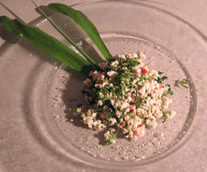

Laab Gai
5,5 von 6Für 2 Personen eine Pouletbrust mit einem scharfen Messer vollkommen zerhacken, bis eine klebrige Masse entsteht. Ohne Öl in einer Teflonpfanne bei mittlere Hitze das Poulet ca. 10 Minuten braten bis kleine weisse Würfeli entstehen. In eine Schüssel geben. Einige Spritzer Fischsauce, Saft von einer Lime, Chili nach Bedarf, Thai-Frühlingszwiebeln und Koriander (so etwas ähnliches, wissen aber Namen nimmer) beigeben. Alles ca. 15 Minuten ziehen lassen.
